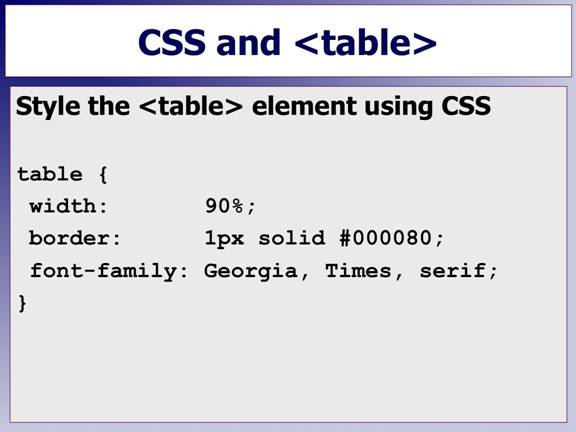
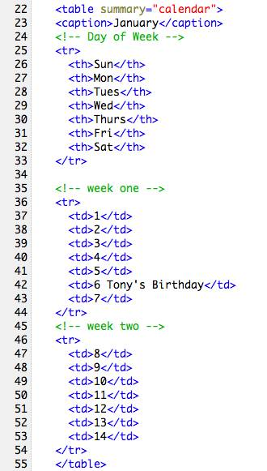
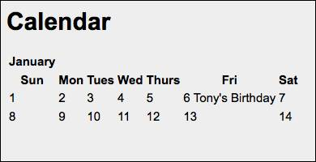
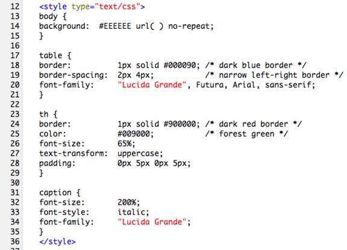
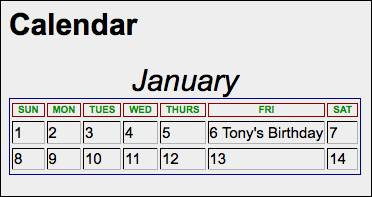

CSS and Tables Styling

Now that you have a good handle on how tables look and respond as well as some of the attributes that can be used to customize them, let's make our tables look good with some CSS.
We will start with a calendar which is a perfect table application.
Here's the basic code you can start with:

Notice how the <caption> element was introduced right after the table tag instead of creating an extra <tr>.
Also notice how we only used two weeks of data. It is a lot easier working with small samplings of code and data. Later, once we have everything working the way we want it will be a simple matter to copy a <tr> and paste it into our code editing the numbers in each <td> column.
This is a good programming practice that is useful for all types of programming tasks. Do a proof-of-concept first and then copy and paste the completed code to flesh out the project.
Here's the output:

This is not very impressive...
Let's add a border using some CSS. In the <head> section of the page add the following CSS rules:

This code will give these results:

Notice how easy it was to format the <caption> element all by itself, compared to setting up a special <div> element to make a row unique.
Here's the CSS rule:
caption {
font-size: 200%;
font-style: italic;
}
Also notice the border-spacing: attribute in the table rule.
It allows setting up various size borders for the left and right as well as the top and bottom.
Here's the CSS rule inside the table designator:
table {
border: 1px solid #000090; /* dark blue border */
border-spacing:2px 4px; /* narrow left-right border */
font-family:"Lucida Grande", Futura, Arial, sans-serif;
}
The borders were also made a different color for the <th> elements so you could quickly see how easy it is to control the different parts of a table.